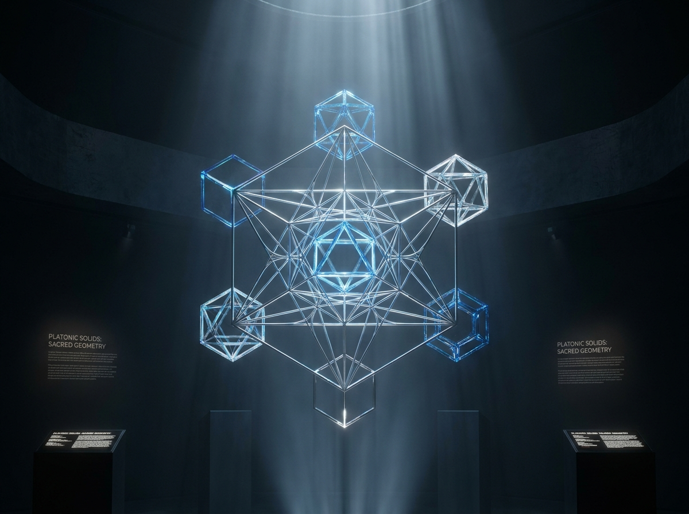

Geometría y Diseño Divino
El Código Oculto de la Creación
y el Arte de Tejer la Luz
Contenido
Para quienes buscan el orden detrás del silencio.
El Eco del Diseño Original
Existe un silencio inmenso, denso y lleno de potencial que precede a la aparición de todas las formas en el universo. Cuando nos detenemos a contemplar la deslumbrante variedad del mundo que nos rodea —la sutil danza de las hojas de un árbol orientándose en el aire para captar la mayor cantidad de luz solar al amanecer, la espiral vertiginosa de una caracol marina depositada en la orilla, la delicada hélice tridimensional de nuestro propio ADN o el giro monumental de una galaxia a millones de años luz—, la mente analítica moderna a menudo nos susurra una idea paralizante: la ilusión de que habitamos un cosmos caótico, desconectado y fruto de una simple serie de accidentes aleatorios.

Nos hemos acostumbrado a asumir que la materia física se organiza por pura entropía, por choque ciego de partículas en la nada. Sin embargo, basta con detener la prisa cotidiana, pausar el ruido de la rutina y afinar la mirada para descubrir una verdad asombrosa y luminosa: la Naturaleza no improvisa jamás.
En cada uno de sus movimientos, desde la escala subatómica hasta las grandes estructuras cosmológicas, palpita una gramática invisible. Existe un código de proporciones exactas, constantes matemáticas inalterables y frecuencias armónicas que optimiza el flujo de la energía, minimiza la resistencia y sostiene cada rincón de la materia física.
A este orden profundo y primigenio solemos llamarlo Geometría Sagrada. Pero debemos comprender esto desde las primeras líneas con total claridad y honestidad intelectual: la geometría no es la Fuente creadora en sí misma. No es Dios, ni es un objeto de adoración mística abstracta. La geometría es, sencillamente, el lenguaje impecable, el alfabeto perfecto mediante el cual esa Fuente inefable se revela, se expresa y se materializa en el plano físico. Es la sintaxis con la que el Creador programa la realidad.
Durante mucho tiempo, la humanidad ha vivido bajo la ilusión de la separación. Nos han enseñado a sentirnos entes aislados, meros espectadores pasivos caminando sobre la superficie de un planeta inerte. Sin embargo, cuando una forma natural nos parece profundamente bella, cuando nos conmueve hasta las lágrimas la simetría de una flor, la estructura impecable de un cristal de hielo o la quietud matemática de un cielo estrellado, lo que ocurre en realidad no es un capricho cultural ni un juicio estético subjetivo. Es un poderoso acto de resonancia biológica.

Nuestra propia biología no hace más que reconocer el código de origen con el que fue diseñada. Tu cuerpo, tu cerebro y tu agua interna están construidos bajo las mismas reglas de proporción que rigen a la estrella más distante. Al contemplar la naturaleza, la consciencia humana se convierte en el propio universo adquiriendo la maravillosa capacidad de contemplar su esplendor en un espejo.
Mi mayor deseo al entregarte estas páginas es que pases gradualmente de la ilusión del caos a la certeza de la armonía. No encontrarás aquí la imposición de dogmas rígidos ni la frialdad de tratados matemáticos académicos sin alma. En su lugar, caminaremos por un puente donde la evidencia empírica de la física, la biología molecular, la cristalografía y los fractales se entrelazan con la filosofía contemplativa y la práctica viva de tejer estructuras tridimensionales con las manos.
Deseo que, al levantar la vista hacia las nubes o al acariciar la corteza de un árbol en tu camino, recuerdes con profunda alegría y tranquilidad que la misma matemática exacta que estabiliza una galaxia organiza cada una de las células de tu corazón. Te doy la bienvenida a este espacio de exploración. Estás a punto de descubrir que llevás el código del infinito grabado en tu propio ser.
De la Informática al Hilo
La Búsqueda del Algoritmo
La mente analítica ante el código
Existe una conexión profunda e insospechada entre la lógica interna de un código informático y la tensión exacta con la que se sostiene una estructura geométrica tridimensional en el espacio físico. Durante muchos años, mi mente estuvo habituada al pensamiento analítico de los sistemas de información: la arquitectura de software, la lógica de programación, la gestión de variables, los diagramas de flujo y los bucles de optimización. Para un analista de sistemas, el mundo se comprende y se descifra como una red compleja de procesos que buscan la mayor eficiencia, reduciendo el error y eliminando la redundancia.
En el lenguaje de la informática, un sistema es una estructura cerrada de elementos interrelacionados donde cada instrucción tiene un propósito. Si una sola línea de código contiene una falla de sintaxis, la ejecución se detiene o el programa colapsa. La búsqueda de la elegancia en un algoritmo no es un asunto estético secundario; es la búsqueda del camino más corto, limpio y estable para resolver un problema complejo.
Sin embargo, la vida tiene formas sublimes e inesperadas de entrelazar la teoría intelectual con la experiencia tangible del corazón. Mi encuentro definitivo con la geometría no ocurrió dentro de un aula universitaria ni leyendo antiguos tratados de matemáticas en una biblioteca. Nació en el calor de la cotidianeidad y la complicidad compartida junto a mi compañera Clarisa Cásimo, madre de mi hija Iara Luz.

Fue Clarisa quien puso por primera vez ante mis ojos un tejido geométrico tridimensional. Era una pieza delicada pero firme, armada con pequeños tubos e hilos que dibujaban una forma poligonal flotando en el aire.
Al contemplar aquella figura, mientras cualquier otra persona hubiera visto simplemente un adorno artesanal o una pieza decorativa, mi mente de analista de sistemas sufrió una sacudida inmediata. No vi una artesanía: reconocí al instante un sistema tridimensional cerrado. Un entramado de vectores físicos donde las fuerzas de compresión de los tubos y las fuerzas de tracción del hilo debían encontrar una coherencia matemática absoluta para no deformarse ni colapsar.
En ese preciso instante nació una fascinación que me acompañaría durante más de quince años de mi vida: la obsesión por descubrir y perfeccionar el algoritmo de tejido perfecto.
El problema topológico de la matriz cerrada
Para quien nunca ha intentado construir un poliedro tridimensional con sus propias manos, la tarea puede parecer un asunto trivial de ensamblaje. Se podría pensar que basta con unir tubos y pasar un hilo a través de ellos de cualquier manera. Pero la realidad de la física geométrica es implacable.
Cuando intentas tejer un cuerpo complejo —como un Icosaedro, un Dodecaedro o una Estrella Octángula (Merkabah)— te enfrentas a un problema topológico de alta complejidad. La pregunta analítica que se convirtió en mi desvelo junto a Clarisa fue la siguiente:
¿Cómo lograr que un único hilo continuo recorra absolutamente todas las aristas de un poliedro tridimensional, pasando la menor cantidad de veces posible por cada vértice, distribuyendo la tensión de forma milimétricamente idéntica en todos los nodos y logrando que la figura se autosostenga sin nudos flojos ni deformaciones?

No era un desafío decorativo. Era un problema de optimización de rutas y física de materiales en el espacio real. Si pasas el hilo tres veces por un tubo y solo una vez por el tubo adyacente, la acumulación de grosor desalinea los vértices. Si tensionas demasiado una arista del hemisferio superior, deformas la base inferior. El poliedro es un organismo vivo de fuerzas: lo que le haces a un nodo repercute instantáneamente en toda la estructura.
Comenzamos a probar, a dibujar diagramas de secuencia, a mapear los vértices como si fueran nodos de una red de computadoras. Nos dimos cuenta de que existían "caminos ciegos" donde el hilo quedaba atrapado, obligando a cortar la tanza o a hacer nudos antiestéticos que rompían la pureza del flujo. Necesitábamos encontrar la sintaxis exacta, el bucle perfecto que permitiera tejer la geometría entera en un flujo continuo y armónico.
La pedagogía del error y el desarmado
Fueron incontables las tardes y las noches en las que tuve que desarmar por completo una figura a medio terminar. Tenía entre mis manos horas de trabajo, decenas de tubos de acero inoxidable alineados y canutillos de vidrio ensartados uno a uno con infinita paciencia, pero al llegar al último tramo, descubría que la tensión final no cerraba correctamente o que la figura presentaba una ligera torsión imperceptible a simple vista pero letal para su simetría.
En el desarrollo de software, cuando cometes un error en el código, el compilador te marca una alerta y corrige la línea. En la geometría física tridimensional, el compilador es la gravedad y la tensión del hilo. Un solo milímetro de desvío o un tramo con menos presión destruye la estabilidad de toda la matriz.
Al principio, desarmar una figura generaba la frustración inevitable del principiante. Sentías que habías perdido el tiempo, que el material se resistía, que la teoría fallaba. Pero con el paso del tiempo, el acto de desarmar se convirtió en mi mayor maestro. Entendí que el desarme no era un fracaso, sino la única pedagogía real para comprender la física oculta detrás de la forma.
Cada vez que desarmábamos una figura junto a Clarisa, el material nos hablaba. Descubríamos exactamente en qué punto la estructura había acumulado demasiada tensión, dónde el hilo había sufrido fricción excesiva y qué secuencia de pases era la que garantizaba la estabilidad. Aprendimos a respetar la naturaleza del acero y la fragilidad del vidrio.
No estábamos imponiendo nuestra voluntad sobre los materiales; estábamos aprendiendo a dialogar con las leyes geométricas del espacio. Hasta que, finalmente, tras infinitas pruebas, correcciones y ajustes, el algoritmo sintáctico quedó descifrado. Habíamos encontrado la secuencia lineal capaz de desplegar la tridimensionalidad con absoluta elegancia.
¿Orden o Caos?
La Ilusión del Azar
La paradoja de la entropía y la mirada reduccionista
Te invito a detenerte un instante en tu rutina diaria y salir a observar el mundo natural sin los filtros de la prisa. Observa con detenimiento las ramas de un quebracho o de un algarrobo recortándose contra el cielo al atardecer, el curso libre y serpenteante de un río montañoso abriéndose paso entre las rocas, o el contorno efímero y cambiante de una nube impulsada por el viento.
Durante siglos, el pensamiento científico dominante y la filosofía mecanicista derivada de la Revolución Industrial nos han repetido un dogma reconfortante para el ego humano: la idea de que la naturaleza es un cúmulo de entropía ciega, una mezcla de accidentes biológicos y físicos donde la vida lucha desesperadamente por imponer un orden temporal sobre un fondo de caos absoluto y destructivo.
Nos han enseñado a ver el mundo como un reloj descompuesto o como un juego de dados cósmico donde las cosas suceden por pura coincidencia genética o mecánica. Es comprensible que, bajo esta premisa reduccionista, la mente humana se sienta profundamente sola, desamparada y ajena al planeta que habita. Si todo es azar, si la forma de un árbol o la estructura de una roca son simples accidentes sin sintaxis, entonces nada tiene un sentido intrínseco.
Sin embargo, cuando nos atrevemos a ir más allá de la observación superficial y aplicamos las herramientas de la física moderna, la dinámica de fluidos y la geometría no euclidiana, la supuesta "entropía caótica" comienza a disolverse. Nos damos cuenta de que el caos no es la ausencia de orden; es, en realidad, un nivel de complejidad matemática tan elevado y bellamente entrelazado que la percepción humana convencional aún no ha terminado de decodificar.
La Naturaleza no conoce el desorden en el sentido humano de la palabra. Lo que solemos calificar de "caótico" es simplemente una estructura cuyos patrones de autorregulación y optimización energética se despliegan en múltiples dimensiones o escalas que escapan a nuestra vista inmediata.
La gramática invisible del flujo
Cuando un líquido fluye a través de un cauce o cuando el aire circula alrededor del ala de un ave, no se mueve de manera caprichosa. Sigue líneas de corriente que responden a ecuaciones precisas de menor resistencia. Un río no serpentea porque "no sabe adónde ir"; serpentea porque la dinámica de fluidos exige que el agua distribuya la energía cinética a lo largo del terreno para evitar la erosión destructiva y mantener la velocidad constante. La espiral y la curva no son caprichos estéticos: son soluciones físicas para la conservación de la energía.
En la escala atmosférica ocurre exactamente lo mismo. Un huracán visto desde el espacio muestra la forma inconfundible de una espiral logarítmica. ¿Por qué una masa de aire masiva en la atmósfera adopta la misma proporción que la caracola marina en el océano o el centro de un girasol en el campo? La respuesta es simple y profunda: porque la geometría de la espiral es la única forma espacial que permite a la materia concentrarse o expandirse manteniendo el equilibrio dinámico sin colapsar por fricción.
Al cambiar nuestro marco de observación, la naturaleza deja de ser un escenario caótico y se revela como una sinfonía de leyes matemáticas en acción. Lo que antes clasificábamos como confusión se transforma ante nuestros ojos en una red matemática interconectada. Hay una gramática invisible sosteniendo el tejido de la realidad, un código de proporciones que optimiza cada partícula de masa y cada pulso de energía.
La Esfera y el Silencio
La Física de la Tensión
El centro primordial y la forma cero
Para comenzar a decodificar este lenguaje sagrado con rigor y claridad, debemos viajar mentalmente al origen de todas las formas geométricas posibles: al estado de preexistencia. Este no es un estado de vacío inerte en el sentido de la carencia o la nada; es, por el contrario, un centro silencioso y rebosante de puro potencial. Es el punto adimensional donde todas las fuerzas se encuentran en absoluto equilibrio, un espacio de equidistancia perfecta donde ninguna dirección o dimensión prevalece sobre la otra.
Es desde este silencio primordial, desde esta quietud receptiva, que emerge el primer impulso de manifestación de la materia en el espacio tridimensional. Y la primera forma que encarna esta transición es la Esfera.

Desde la Antigüedad más remota, en las escuelas de sabiduría como la pitagórica o la platónica, la esfera no era considerada un simple cuerpo geométrico para dibujar en una pizarra académica. Era venerada como la expresión máxima de la armonía y la paz, la forma sagrada por excelencia. La razón de esta reverencia no es mística en el sentido vago, sino profundamente física y matemática: la esfera es el único cuerpo tridimensional en el cual cada uno de los puntos de su superficie exterior se encuentra exactamente a la misma distancia de un único punto central fija.
Esta propiedad única convierte a la esfera en la solución perfecta que la física del universo utiliza para contener la energía. En la mecánica de fluidos, la tensión superficial de una gota de agua que flota en ingravidez la obliga de forma espontánea a tomar la forma de una esfera impecable. ¿Por qué? Porque la esfera es la figura geométrica que encierra el mayor volumen posible utilizando la menor cantidad de superficie exterior. Minimiza el gasto de energía y maximiza la resistencia estructural.
La tensión viva en el taller
La esfera no es una forma rígida; es un equilibrio dinámico de presiones. Distribuye las fuerzas externas que la impactan a lo largo de toda su curvatura de manera uniforme, sin permitir que la carga se acumule en un solo punto débil. Por eso una burbuja de jabón o una gota de lluvia pueden sostenerse en el aire: porque su centro mantiene las presiones equilibradas en 360 grados.
Esta lección de la física natural se vuelve maravillosamente tangible cuando nos sentamos a tejer una estructura esférica en el taller de Icho Cruz. Cuando trabajas con tubos de acero inoxidable e hilos de alta resistencia para dar forma a un poliedro esférico (como un Icosaedro truncado o una esfera geodésica), experimentas la ley de la tensión en la punta de tus propios dedos.
Si aplicas demasiado tirón en uno de los vértices superiores de la estructura, la deformación no se queda en ese lugar: se desplaza en forma de onda y aplasta el polo opuesto de la esfera. Si dejas un tramo de hilo con poca tensión, el hemisferio entero pierde su curvatura y se vuelve plano. Para que la esfera se sostenga flotando en el aire con firmeza y elegancia, el artesano debe aprender a aplicar una fuerza milimétricamente homogénea en cada uno de los nodos.
Tejer la esfera se convierte así en una lección sobre el equilibrio personal. Aprendes que la estabilidad no se logra mediante la rigidez dura e inflexible, sino mediante la distribución armónica de la tensión. La esfera te enseña que para sostener la forma en el mundo externo, primero debes aprender a habitar el centro silencioso de tu propia estructura interior.
Fibonacci, la Constante Phi
Y la Matriz del ADN
La matemática de la optimización viva
Observa con detenimiento cómo se expande la vida vegetal a tu alrededor. Nota la disposición milimétrica en la que un tallo distribuye sus hojas a medida que crece hacia el cielo, o la arquitectura espiralada con la que se organizan las escamas de una piña de pino. Durante mucho tiempo se asumió que este empaquetamiento era un proceso aleatorio, una simple suma de crecimientos biológicos caóticos sin reglas fijas.
Sin embargo, la Naturaleza no improvisa ni derrocha recursos en lo absurdo. En cada movimiento biológico existe una eficiencia matemática impecable: cada nueva célula, cada semilla y cada pétalo requiere ubicarse en la posición exacta que le permita recibir la máxima cantidad de luz solar, captar el agua de lluvia sin tapar a las capas inferiores y optimizar el espacio tridimensional con el menor gasto de energía posible.
A este fenómeno de distribución foliar los botánicos lo llaman filotaxis. Y cuando se analiza el ángulo exacto con el que brota cada hoja respecto a la anterior, descubrimos una constante asombrosa: un giro de aproximadamente 137.5°, conocido como el Ángulo Áureo.
En el corazón de este algoritmo vegetal se encuentra una serie numérica popularizada en Occidente por Leonardo de Pisa, conocido como Fibonacci. La regla de esta secuencia es de una sencillez sublime: cada número es el resultado de la suma de los dos anteriores.
1, 1, 2, 3, 5, 8, 13, 21, 34, 55, 89...
A medida que esta progresión avanza hacia el infinito, la división de cualquier término por su número predecesor converge de forma ineludible en el número irracional conocido como la Proporción Áurea, representado por la letra griega Phi:
Φ = 1.618033...
Phi no es un concepto estético inventado por el arte humano; es la frecuencia geométrica que le permite a la materia crecer y expandirse de forma autosimilar. Es la constante que garantiza que un organismo pueda aumentar su tamaño de forma indefinida sin perder jamás su centro de gravedad, su simetría ni su estabilidad estructural original.

El código divino en la escala molecular
Lo más conmovedor de esta gramática es que no se limita al mundo botánico ni al diseño de las conchas marinas. Esta misma matemática está impresa en lo más íntimo de nuestra propia arquitectura biológica.
Cuando la biología molecular contemporánea logró medir las dimensiones exactas de la doble hélice de la molécula de ADN humano, descubrió una relación geométrica fascinante: un ciclo completo de la espiral del ADN mide exactamente 34 Å (34 ángstroms) de longitud, mientras que el ancho de la hélice mide exactamente 21 Å.
Tanto el 34 como el 21 son números consecutivos de la Secuencia de Fibonacci. La razón de su división (34 / 21 ≈ 1.619) encarna directamente la Proporción Áurea Φ. La matriz que guarda el código genético de toda la vida en la Tierra se enrolla y se empaqueta bajo la misma constante matemática que rige la forma de los girasoles y la trayectoria de los huracanes.
La geometría fractal y la Ley de Correspondencia
El descubrimiento de la geometría fractal por el matemático Benoit Mandelbrot a finales del siglo XX vino a confirmar lo que la filosofía contemplativa intuía desde hacía milenios. Las nubes no son esferas perfectas, las montañas no son conos limpios y los relámpagos no viajan en línea recta. La Naturaleza se expresa a través de fractales: formas complejas donde cada pequeña parte replica la estructura del conjunto entero a diferentes escalas.
Esta autosimilitud fractal es palpable dentro de nuestro propio organismo. El árbol bronquial en nuestros pulmones y la vasta red de vasos sanguíneos en nuestro sistema circulatorio se ramifican siguiendo algoritmos fractales exactos. Se vuelven cada vez más finos hasta alcanzar la escala capilar, logrando cubrir una superficie masiva de intercambio de oxígeno dentro del espacio reducido del tórax.
Aquí es donde la investigación científica y la contemplación filosófica se abrazan. La geometría fractal es la demostración física de la antigua Ley de Correspondencia: "Como es arriba, es abajo". Un fractal prueba que el fragmento más diminuto contiene la información, la proporción y la belleza de la totalidad.
Al comprender que estamos construidos bajo estas leyes, la ilusión del aislamiento se desvanece. No eres un transeúnte extraviado en un cosmos ajeno y caótico; eres un fractal vivo, una obra de arte consciente que lleva el código del universo impreso en cada una de sus células.
Cimática
Cuando la Frecuencia Organiza la Materia
El puente entre la vibración invisible y la forma tangible
Si el origen de la creación es un silencio primordial o un centro de puro potencial, la pregunta fundamental que surge es: ¿de qué manera ese estado incorpóreo se transforma en materia sólida y estructurada? La respuesta la encontramos en las enseñanzas ancestrales que afirmaban que en el principio de todo existió una Frecuencia, un Verbo o una Vibración primordial. La forma que tocamos y vemos en el mundo físico es simplemente la manifestación congelada de una frecuencia en el espacio.
Hoy en día, este principio ha dejado de ser una especulación filosófica para convertirse en una realidad demostrable en el laboratorio a través de la cimática, el estudio del fenómeno de las ondas sonoras sobre la materia.
Cuando colocas una fina capa de materia informe —como arena, polvo de licopodio o agua— sobre una placa metálica (conocida como Placa de Chladni) y la sometes a la vibración de un tono acústico puro, la materia no se dispersa de forma caótica. Por el contrario, las partículas comienzan a moverse y se organizan espontáneamente en mandalas geométricos de una simetría y belleza deslumbrantes.
A medida que aumentas la frecuencia expresada en hercios (Hz), la materia sobre la placa se reorganiza de inmediato, pasando de polígonos sencillos a complejas flores geométricas y patrones fractales. Las partículas se desplazan desde las zonas de mayor vibración hacia los llamados nodos nulos o puntos de reposo, donde la onda se anula a sí misma.

La cimática nos demuestra que el sonido no es una abstracción que flota en el aire; es una fuerza organizadora tridimensional. La forma visible es la geometría del sonido haciéndose tangible.
El ser humano como instrumento resonante
Al comprender la física de la cimática, nos damos cuenta de que el cuerpo humano —compuesto en más de un 70% por agua— es un instrumento biológico de alta sensibilidad resonante. El ritmo de nuestra respiración, la cualidad de nuestras emociones y el tono de nuestras palabras generan ondas de presión que organizan o desorganizan nuestra estructura interna.
Esta ley física se experimenta con total claridad en la práctica manual del taller. Cuando tejemos una estructura tridimensional con tubos de acero inoxidable y tanza de alta resistencia, estamos ejecutando un proceso similar al de la cimática. Cada pase del hilo, cada ajuste de tensión en las aristas genera una "frecuencia de carga" en la figura.
Si la tensión aplicada es desigual, la figura emite una distorsión visual y física; pero cuando el hilo alcanza el ajuste exacto en todos sus vértices, los tubos entran en un estado de coherencia de fase. La figura se vuelve firme, resuena al tacto y proyecta un equilibrio que transmite una paz inmediata a quien la contempla.
No estamos simplemente armando piezas de acero y cristal; estamos afinando un receptor de geometría viva.
Los Sólidos Platónicos
Y la Cristalografía Real
Los bloques fundamentales de la tridimensionalidad
En el ámbito de la geometría tridimensional existe un grupo de formas absolutamente único y privilegiado. De entre las infinitas figuras posibles en el espacio, solo existen cinco poliedros convexos cuyas caras son polígonos regulares exactamente iguales entre sí, y donde todos sus ángulos interiores y vértices coinciden con absoluta precisión.
Conocidos históricamente como los Sólidos Platónicos, estos cinco cuerpos son:
- El Tetraedro — 4 caras triangulares
- El Cubo o Hexaedro — 6 caras cuadradas
- El Octaedro — 8 caras triangulares
- El Icosaedro — 20 caras triangulares
- El Dodecaedro — 12 caras pentagonales
En el diálogo Timeo, Platón propuso una intuición poética y filosófica que resonó durante siglos: asoció cada uno de estos sólidos a los elementos constitutivos del cosmos (el Tetraedro al Fuego por su naturaleza punzante; el Cubo a la Tierra por su estabilidad sólida; el Octaedro al Aire por su levedad; el Icosaedro al Agua por su fluidez casi esférica; y el Dodecaedro al Éter o la totalidad del cosmos).
Sin embargo, para construir una obra seria y perdurable, debemos marcar un límite claro entre el valor simbólico o histórico de estas metáforas y la realidad de la ciencia empírica. La verdadera fascinación de los sólidos platónicos no radica en la especulación esotérica, sino en el hecho de que la física moderna y la cristalografía han demostrado que estas cinco formas son los bloques de empaquetamiento fundamental de la materia atómica.
La física del menor gasto energético
La naturaleza no utiliza los sólidos platónicos por una razón mística abstracta, sino por el principio de mínima acción y menor gasto de energía.
Cuando los átomos de un mineral se organizan para formar una red cristalina sólida, buscan la configuración espacial que les permita empaquetarse distribuyendo las fuerzas electrostáticas con el mayor equilibrio posible. Es por esto que la sal común (NaCl) cristaliza en redes cúbicas perfectas; la pirita y la fluorita forman octaedros y cubos de precisión geométrica en las entrañas de la tierra; y las estructuras microscópicas de los cristales de cuarzo responden a simetrías poliédricas inalterables.

Llevado a la escala de la microbiología, el descubrimiento de la cápside proteica de muchos virus (como el adenovirus o el virus del herpes) reveló que se organizan bajo la forma de un icosaedro perfecto. ¿Por qué un organismo microscópico adopta un icosaedro? Porque es la forma espacial que le permite construir una cubierta protectora cerrada utilizando la menor cantidad posible de subunidades de proteínas idénticas, maximizando el volumen interno con la máxima rigidez estructural.
El Cubo de Metatrón como matriz de proyección
Cuando dibujamos bidimensionalmente el patrón conocido históricamente como el Cubo de Metatrón —que se origina trazando los trece círculos de la Fruta de la Vida y uniendo todos sus centros con líneas rectas—, presenciamos un fenómeno geométrico notable.
En esa red de líneas aparentemente bidimensional están contenidas, de forma implícita y perfecta, las proyecciones en perspectiva de los cinco sólidos platónicos. El Cubo de Metatrón actúa como una plantilla o matriz plana que sintetiza todas las formas poliédricas regulares posibles en tres dimensiones.
Cuando pasamos del dibujo sobre el papel al tejido tridimensional en el taller, descubrimos que los sólidos platónicos no son figuras aisladas: se transforman y se anidan unos dentro de otros. Si tomas un Icosaedro y conectas los centros de sus 20 caras triangulares, descubres dentro de él un Dodecaedro perfecto. Si unes los centros de las caras de un Cubo, nace un Octaedro.
Esta cualidad, conocida como dualidad geométrica, nos enseña que las formas no están separadas en el universo: son estados de transición de una misma red tridimensional que se expande y se contrae en perfecto equilibrio.
La Merkabah
Y la Física de la Tensegridad
La intersección de los tetraedros opuestos
Entre todas las geometrías complejas que se pueden construir con las manos, ninguna genera una fascinación tan inmediata ni una presencia tan magnética como la Estrella Octángula, conocida popularmente en diversas tradiciones espirituales como la Merkabah.
A nivel puramente geométrico, la Merkabah nace de la interpenetración simétrica de dos tetraedros regulares idénticos orientados en direcciones opuestas: uno con la cúspide apuntando hacia arriba y el otro con la cúspide apuntando hacia abajo, compartiendo un centro común. El resultado es una estrella tridimensional de 8 vértices, 24 aristas y 12 caras triangulares externas.
Las tradiciones esotéricas y el neomisticismo contemporáneo han rodeado a la Merkabah de múltiples interpretaciones, definiéndola como un "vehículo de luz", un campo de energía contrarrotativo o un cuerpo sutil de ascensión. Es importante encarar estas afirmaciones con honestidad intelectual: pertenecen al terreno de la metáfora espiritual, la creencia personal y el simbolismo cultural.
Sin embargo, cuando analizamos la Merkabah desde la física teórica, la topología y la ingeniería de estructuras, descubrimos que no necesita de especulaciones fantásticas para ser extraordinaria: es un monumento a la física de fuerzas vectoriales.
Buckminster Fuller y el Vector Equilibrium
El célebre arquitecto, inventor y matemático estadounidense Buckminster Fuller dedicó gran parte de su vida a estudiar la geometría de los vectores de fuerza en el espacio. Fuller descubrió que cuando ensamblas una matriz de tetraedros y octaedros entrelazados, alcanzas un estado al que denominó Vector Equilibrium (Equilibrio Vectorial).
El equilibrio vectorial es la única configuración espacial donde todas las fuerzas de atracción (tracción) y repulsión (compresión) son absolutamente iguales en longitud y magnitud. Es el punto de "cero absoluto" de la dinámica de fuerzas: el estado donde el espacio no sufre ninguna distorsión y donde la energía se distribuye sin generar puntos de tensión destructiva.
La Merkabah es una manifestación directa de este principio de equilibrio vectorial. Cuando observas su forma, no estás viendo un objeto estático: estás viendo la imagen congelada de fuerzas opuestas en perfecta cancelación y armonía.
La experiencia tangible en el taller
Llevar la Merkabah del concepto mental a la realidad física mediante el tejido artesanal es una de las lecciones más exigentes y reveladoras para cualquier persona.
Para tejer una Merkabah utilizando tubos de acero inoxidable, canutillos de vidrio e hilo de alta resistencia, no puedes permitirte la menor imprecisión. Cada uno de los dos tetraedros debe tener exactamente la misma tensión en sus 6 aristas correspondientes. Si uno de los tetraedros queda milimétricamente más ajustado que su par opuesto, la estrella se tuerce, los vértices pierden su alineación y la simetría central se destruye.
Al manipular la figura en el taller, sientes en la punta de los dedos cómo la tensión se transfiere de un vértice a otro en tiempo real. Cuando finalmente logras aplicar el algoritmo de tejido correcto y aseguras el último nodo, la estructura sufre una transformación asombrosa: pasa de ser un manojo suelto de tubos e hilos a convertirse en un cuerpo de tensegridad autosostenido.
La pieza se vuelve rígida, ligera y resonante. Si la suspendes de un hilo y la iluminas con una fuente de luz directa, la estrella proyecta sobre las paredes sombras geométricas que giran suavemente. La Merkabah deja de ser una idea abstracta leída en un libro místico para convertirse en una lección viva de física, donde tus propias manos han logrado reconciliar fuerzas opuestas bajo un único diseño armónico.
Neuroestética
La Biología del Asombro
Por qué la simetría calma la mente
¿Por qué sentimos una profunda e inconfundible sensación de paz, orden y reverencia al contemplar la copa de un árbol ancestral, el fluir de un río o las bóvedas geométricas de un templo? Durante siglos, la filosofía y el arte debatieron si la apreciación de la belleza era una construcción enteramente subjetiva o un capricho cultural. Sin embargo, la disciplina contemporánea de la neuroestética ha demostrado que nuestra respuesta emocional ante la forma tiene profundas raíces biológicas y evolutivas.
Nuestro cerebro no es una pantalla neutra; es un órgano optimizado para la supervivencia que consume una enorme cantidad de energía metabólica al procesar información visual. Cuando observamos un entorno caótico, desordenado o saturado de formas rígidas e impredecibles, el sistema visual trabaja a marchas forzadas para interpretar el entorno, lo que activa estados sutiles de alerta y fatiga cognitiva.
Por el contrario, cuando los ojos se posan sobre un patrón que posee simetría, proporción áurea o autosimilitud fractal, la corteza visual reconoce la estructura de forma casi instantánea. La neurociencia ha comprobado que el procesamiento de patrones armónicos requiere un menor consumo de glucosa y energía neurológica. A este fenómeno se lo conoce como fluidez de procesamiento.
Esta eficiencia metabólica se traduce directamente en nuestro estado interno: disminuye la sobreactividad en la amígdala cerebral (el centro del miedo y la alerta) y se estimula la liberación de neurotransmisores asociados a la calma, la atención sostenida y el placer estético. La belleza geométrica produce un descanso fisiológico real.
La memoria de la especie
Esta respuesta no es casual. Para nuestros ancestros, la presencia de patrones geométricos y fractales en el entorno natural era la señal más clara de vida, salud y abundancia: indicaba la presencia de vegetación frondosa, agua fluida, colmenas estructuradas o cristales minerales estables. El caos y la asimetría drástica, en cambio, solían asociarse a la putrefacción, la enfermedad o el peligro.
Por eso, cuando te detienes ante una estructura geométrica tridimensional y sientes que algo dentro de ti "se acomoda", no estás aprendiendo un concepto abstracto exterior; tu biología está reconociendo la misma simetría y las mismas leyes de proporción que estructuran tus neuronas, tus vasos sanguíneos y tu ADN. La belleza es el lenguaje mediante el cual tu organismo reconoce su diseño original.
La Luz Invisible
Y el Límite Perceptivo
El 0.00035% de la realidad
Nuestros ojos biológicos son herramientas evolutivas extraordinarias, pero sumamente acotadas. La física nos recuerda una verdad humillante para el ego humano: la franja de luz que llamamos "espectro visible" representa apenas un 0.00035% de todo el espectro electromagnético existente en el universo.
A nuestro alrededor orbitan constantemente ondas de radio, microondas, radiación infrarroja, luz ultravioleta, rayos X y rayos gamma. Todas estas frecuencias forman parte del tejido real del cosmos, pero pasan completamente invisibles para nuestra retina. La mayor parte de la realidad física nos rodea e impregna en este preciso instante sin que nuestros sentidos puedan registrarla directamente.
Además, la imagen que creemos "ver" allá afuera no es una copia fiel de la realidad exterior. Las señales de luz visible que ingresan por la pupila son transformadas en impulsos eléctricos por los fotorreceptores de la retina y enviadas a través del nervio óptico hacia la corteza visual. Es nuestro cerebro el que "reconstruye" e interpreta esa información dentro de la caja oscura del cráneo. Asumir que el universo es únicamente lo que nuestros ojos biológicos alcanzan a percibir es un profundo error de apreciación.
La geometría como lente deductiva
Aquí es donde la geometría sagrada y la física matemática revelan su verdadero valor. La geometría actúa como una lente deductiva, una brújula conceptual que nos permite mapear y comprender la arquitectura del 99.999% de la realidad invisible que escapa a nuestros sentidos.
Cuando la ciencia estudia la estructura de un átomo, la vibración de una onda armónica, la red cristalina de un mineral o la difracción de los rayos X, no los "ve" directamente con los ojos: los deduce y los representa mediante la matemática y la geometría. La forma geométrica es el plano visible de las fuerzas invisibles.
Al comprender esto, nuestra posición frente al mundo cambia radicalmente. La geometría nos enseña a ser humildes ante nuestros límites perceptivos y, al mismo tiempo, nos da la clave para intuir la inmensa red de orden y coherencia que sostiene la materia en todo momento.
El Arte de Tejer la Luz
Y la Meditación Activa
La física de la materia tangible
Llega un punto en la trayectoria de cualquier buscador donde la sola contemplación intelectual o el estudio de diagramas en un libro dejan de ser suficientes. El ser humano siente la necesidad ancestral de usar las manos, de bajar el concepto a la tierra y pasar de ser un mero observador a convertirse en un participante activo de la forma.
Tejer geometrías tridimensionales no es una tarea abstracta ni una simple manualidad pasiva: es un diálogo directo y riguroso con la física de los materiales.
En nuestro trabajo utilizaremos tres elementos fundamentales, cada uno con una función estructural y simbólica clara:
- El Acero Inoxidable: Tubos delgados y rígidos que aportan la fuerza de compresión. Son los vectores rectos que sostienen la distancia entre los nodos y resisten la presión del espacio.
- La Tanza o Hilo de Alta Resistencia: El elemento fluido que aporta la tracción viva. Es la fuerza invisible que une los vértices y abraza toda la matriz.
- Los Canutillos de Vidrio y Cristales: Elementos que se ubican en los puntos de cruce para refractar y reflejar la luz, transformando la estructura metálica en una escultura luminosa.
Un solo milímetro de exceso en la tensión de un hilo o un corte desigual en un tubo de acero desviará la simetría de toda la pieza. El tejido te exige desarrollar una sensibilidad absoluta en la yema de los dedos: aprendes a sentir el punto exacto donde el hilo alcanza su firmeza sin romper la tanza ni deformar el vértice. Resolver el camino por el cual el hilo debe recorrer la figura sin repetirse inútilmente es la aplicación práctica del algoritmo de tejido que descubrimos junto a Clarisa.
La presencia absoluta en Icho Cruz
Existe la idea muy difundida de que para meditar es necesario sentarse en una postura rígida, poner la mente en blanco y silenciar a la fuerza el flujo del pensamiento. Mi experiencia de más de quince años tejiendo estas formas en Villa Icho Cruz me ha enseñado una vía diferente: la meditación activa.
Cuando te sientas a construir un Dodecaedro o una Merkabah, la mente analítica no puede estar en otro lado. Si te distraes pensando en las preocupaciones del pasado o la ansiedad del futuro, pierdes la secuencia del hilo, ensartas un canutillo equivocado o aplicas una tensión desigual que arruina el módulo.
La geometría impone una presencia absoluta. Mientras tus manos repiten de forma fluida el algoritmo de tejido, el ruido mental se apaga de forma natural. No hay esfuerzo por "callar" los pensamientos: simplemente pierden su fuerza porque toda tu consciencia está enfocada en el instante presente, en el paso del hilo, en el equilibrio del siguiente vértice.
Ver a una persona sostener en sus manos la figura que acaba de tejer tras horas de silencio, atención y paciencia es presenciar un acto de profunda transformación. La persona no solo se lleva un objeto geométrico a su casa: ha experimentado la certeza de que, mediante la presencia y la paciencia, sus propias manos son capaces de poner orden en el caos.
Habitantes de la Armonía
Hemos llegado al final de este recorrido. Si has acompañado estas páginas con apertura y atención, habrás descubierto que el caos no es la ley fundamental de la existencia, sino una ilusión transitoria; un orden más profundo y complejo que aún no habíamos aprendido a decodificar.
La geometría no es una religión, ni un dogma místico, ni una materia escolar aburrida reducida a fórmulas en un pizarrón. La geometría es el alfabeto impecable con el que la Fuente escribe la realidad física. Es el código de proporciones y frecuencias que sostiene a las estrellas, a los cristales, a la molécula de ADN y a tu propia respiración.
Llevas esta matemática perfecta inscrita en tu propia biología. No estás solo ni extraviado en un universo ciego: eres un fractal consciente de la Creación, el propio cosmos adquiriendo la capacidad de contemplarse, comprenderse y maravillarse ante su propia armonía.
A partir de este momento, afina tu mirada. Cuando camines por la naturaleza, cuando contemples la forma de una flor o cuando tomes un hilo para tejer una estructura con tus manos, recuerda con profunda alegría y reverencia que eres el espejo vivo de la Creación.
Has vuelto a tu diseño original.
GEOMETRÍA Y DISEÑO DIVINO
El Código Oculto de la Creación
y el Arte de Tejer la Luz
© 2026 Enzo Emanuel Burga
Todos los derechos reservados
Diseño y composición tipográfica
Villa Icho Cruz